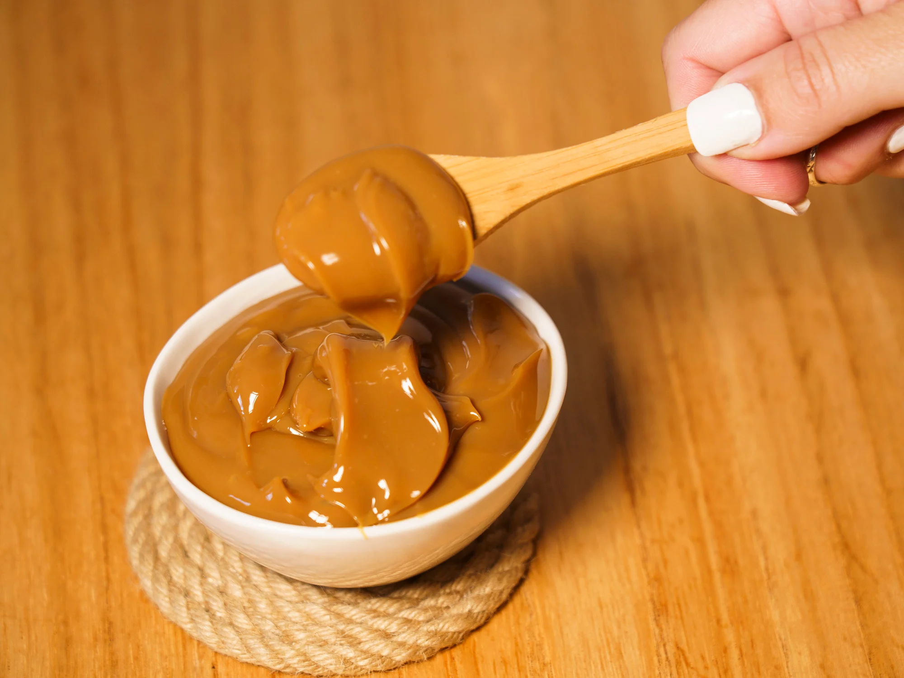

Dulce de leche

This is a typical sweet from Uruguay and Argentina. You can eat it alone, use it to fill cakes, or serve over bananas, ice-cream or any other dessert!.
Dulche de leche, which literally means "candy made from milk," is a thick and sugary caramel-like sauce that's made by slowly heating sweet milk. The Latin American confection is found in desserts like cakes, cookies, and flan. It's also often used as an ice cream topping or spread for toast or crepes.
How to make dulce de leche?
Ingredients
- 1 gallon milk
- 1 vanilla bean
- 4 ½ cups white sugar
- 1 teaspoon baking soda
Steps
- In a large saucepan, bring milk to a boil over medium-high heat. Remove from heat and strain through cheesecloth. Return to pan.
- Cut vanilla bean in half and pour the seeds in the milk. Stir in the sugar and replace the pan on medium-high heat, stirring constantly until the sugar is dissolved. Just as the milk mixture begins to boil, stir in the baking soda. Reduce the heat to medium, stirring constantly until mixture thickens. When a wooden spoon drawn through the mixture leaves the bottom of the pan visible, and the mixture is light brown in color, remove the pan from the heat.
- Place the pan in an ice bath and stir constantly until dulce de leche is cold. Store in airtight container in refrigerator. Pour into sterile jars, and store in the refrigerator.